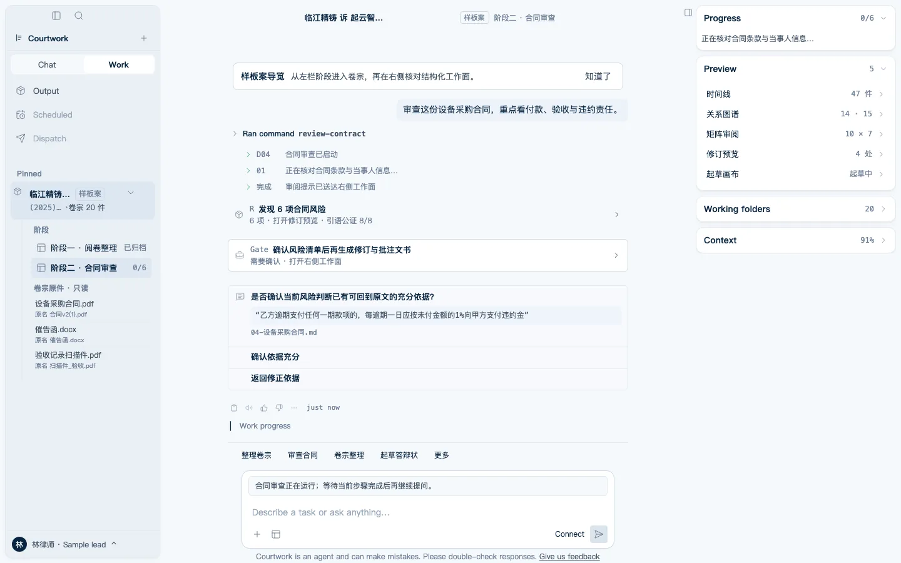
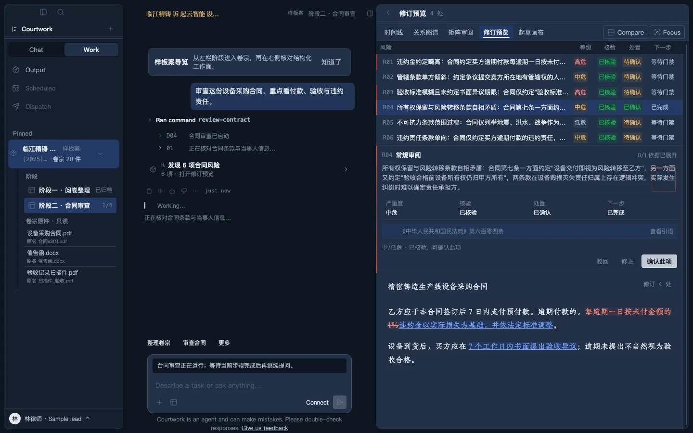
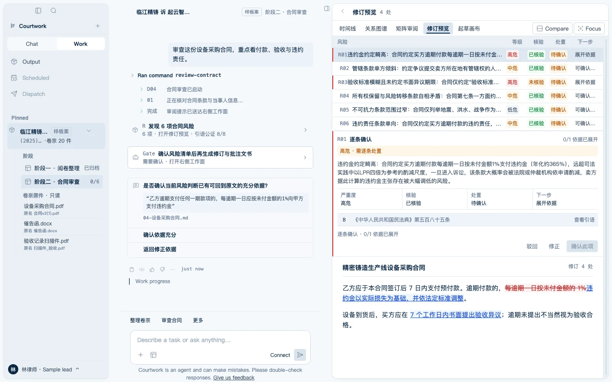

卷宗
从散材料到案件
文件先进入案件范围；可读、需文字识别与不可用状态都留在卷宗侧栏，原件始终只读。

案件级 AI 工作台
把卷宗装进案件，把每条结论钉回原文，把最后一个确认留给人。
v0.1.2 · Apple Silicon开发构建 · ad-hoc 签名 · 未公证f4af2a44248c7d7af970c8486ccaf7c8d72107565c4d824ce9cb8d69578de83d
乙方逾期支付任何一期款项的，每逾期一日应按未付金额的1%向甲方支付违约金。本合同未对甲方逾期交付或交付瑕疵约定相应违约金标准。
高风险违约金单向且畸高
依据 · 04-设备采购合同 · 第 1 页 · 已核验
确认此项驳回修正
改为双向、封顶并与实际损失挂钩。
卷一 · 一条结论如何产生
以下四步来自同一份合成卷宗的真实应用链；链路已在试点中跑通，但不等同于产品已全面上线。
乙方逾期支付任何一期款项的，每逾期一日应按未付金额的1%向甲方支付违约金。本合同未对甲方逾期交付或交付瑕疵约定相应违约金标准。04-设备采购合同 · 第 1 页
“每逾期一日应按未付金额的1%向甲方支付违约金”页码与文本区间由系统解析 · 查看引语可回到原件
每日 1% 且只约束买方，权利义务显著失衡；建议改为双向、封顶并与实际损失挂钩。
高风险 · 依据已核验模型不能替你落格。确认、驳回或修正都会留下可回放记录；未落格修订逐条确认后才生成产物。
待确认 · 不自动送出卷二 · 真实工作面
文件先进入案件范围；可读、需文字识别与不可用状态都留在卷宗侧栏，原件始终只读。

风险等级、依据核验、处置与下一步同屏；高危和未核验条目只能逐条确认，查看引语可回到原件。

修订只写受控副本；redline、非落点说明与确认台账连在一起，未落格不能静默生成产物。

卷三 · 垂类泛化
隐私与原件只读是进入门槛；这里把差异放在锚点、分级确认与可回放台账。证据、状态和人工确认仍由同一套宿主原语承载。
真实模型场景已在合成数据试点中跑通原句→风险→修订→人工确认全链；这不是产品已全面上线的承诺。
逐字锚定
带依据提出
写入受控副本
待确认
材料数量、事件、主体与矛盾标记都从同一份虚构卷宗计算，不用营销数字补齐场面。
同一个宿主读取 PM 的字段、词表和来源锚；当前只证明 schema 投影，不冒充已运行场景。
Schema catalog preview / 尚未接通运行链所有成员都能编辑路线图，但路线图只有负责人可以修改。
冲突需求
区分评论、提议和正式修改，并给出唯一权限矩阵。
待确认
卷四 · 产品边界
卷尾 · Courtwork